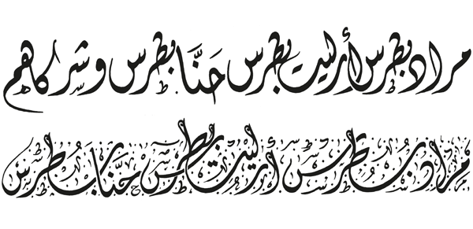

A look inside Arabic for Designers
The book is divided into six chapters, starting with a historical timeline of written Arabic, from its traditional calligraphic roots to its modern typographical and artistic use in advertising as well as in fine art.
1Historical Background
The book starts with a historical timeline of the origin of Arabic, the last of the Semitic scripts which historians trace back to the 3rd-century Nabatean script. This chapter reveals gems like the British Library's oldest Qur'an manuscript that dates back to the 8th century, as well as the different calligraphic styles from Naskhi to Kufic.

2Type design
The second chapter lays out a brief chronology of typesetting methods, from the Linotype machine and photographic typesetting to Letraset sheets and OpenType fonts. The author concludes with DecoType's Advanced Composition Engine (ACE), a layout engine which offers a novel solution to complex text rendering for connected scripts such as Arabic.

3Logotype Design
In this chapter, the author embarks on a thorough examination of contemporary Arabic typography in a world profoundly informed by Western visual aesthetics. Illustrated examples highlight the bilingual use of Latin and Arabic in design reflecting the rise of globalisation and the proliferation of international companies in the Middle East. The author shows how such cross-hybridisation can yield incredibly innovative results on the one hand or embarrassingly disastrous ones on the other.
4Case Studies
From newspapers to television, the featured case studies expose the importance of typography to effective communication. Dave Farey gives an in-depth analysis of newspaper layout and typography as he guides the reader through the evolution of The Times of London, from 1932 until today. Boutros also shares his experience with media outlets, and specifically television channels, through various examples, from the new font family for AlJazirah newspaper to BBC Arabic's custom headline font.
5Designing with Arabic
From calligraphy and logo design to fonts and publications, this chapter forms a gallery of innovative typographic designs. MINI's new Arabic typeface family of headline and text fonts is featured, as well as the Arabs for Bernie Sanders campaign characterised by its bold calligraphy.
The key to successful design, as the author strives to show throughout the book, is a technical and cultural understanding of Arabic as a language and an art form. Designers who merge a hand-made craft with digital technology have a unique skill set, and the marriage of their artistic and technical expertise sparks off distinctively beautiful designs.
6Fine Art & Calligraphy
The final chapter features artistic collaborations that incorporate Arabic calligraphy into visual media, from paintings to tapestries. These works exemplify how the origins of Arabic calligraphy, which has evolved during the last millennium and continued to flourish today, have sprouted into the realm of contemporary fine art.